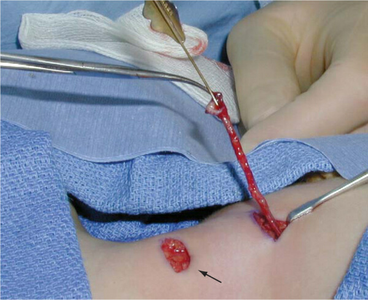

Normal
Pharyngeal (Branchial) arches
· Branchial pouches
· Branchial clefts
· Floor of pharynx
· Respiratory system
Congenital
malformations
· Branchial cysts
· Thyroglosal cyst
· Oesophagotracheal
fistulae
· 1st
arch
syndrome
· Lung abnormalities
Development
· Begins in 4th
week
· pouches
(endodermal) and clefts (ectodermal) appear ® push mesenchyme
into pharyngeal arches.
· Each arch (and \ associated pouch
and cleft) have their own neurovascular supply
· Arch componenets
— Mesenchyme
— Ectoderm
— Endoderm
— Neural crest
cells
— Nerve
— Artery
Arches
· C: cartilage, M:
mesoderm, E: ecto / endoderm, N: nerve, A: artery
Arch
I
N: Trigeminal (V)
A: Maxillary artery
C: Maxillary
process, meckels cartilage (Mandible formed by membranous
ossification around this), incus, malleus, sphenomandibular
ligament
M: muscles of
mastication (Temporal, masseter, pterygoid), mylohyoid, ant
belly digastric, tensor tympani, tensor veli palatini
E: Glands of
anterior 2/3 tongue
Arch
II
N: Facial (VII)
A: Stapedial artery
(ECA)
C: stapes, styloid
process, stylohyoid ligament, lesser horn & upper body of
hyoid
M: muscles of
facial expression (Buccinator, auricularis, frontalis, platysma,
orbicularis oris and oculi), stapedius, stylohyoid & post
belly digastric
Arch
III
N: Glossopharyngeal
(IX)
A: Internal carotid
C: lower body and
greater horn of hyoid
M: stylopharyngeus
E: glands post 1/3
tongue, mucous membrane of post 1/3 tongue and anterior surface
of epiglottis
Arch
IV
· The cartilaginous
component of IV and VI fuse together
N: Vagus (X),
Superior laryngeal
A: R subclavian,
aortic arch
C: thyroid,
cricoid, arytenoid, corniculate and cuneiform cartilages
M: cricothyroid,
levator palatini, constricors of pharynx
Arch
VI
N: Vagus (X),
Recurrent laryngeal
A: R &L
pulmonary, ligamentum areteriosum
C: thyroid,
cricoid, arytenoid, corniculate and cuneiform cartilages
M: Intrinsic
muscles of the larynx
Pouches
1. Tympanic cavity
Mastoid antrum
Tympanic membrane
(where contacts 1st
cleft)
Eustachian tube
2. Palatine tonsil
(Pouch obliterated, epi buds into mesenchyme’ tonsil)
3. Inferior PT
(Dorsal)
Thymus (Ventral)
4. Superior PT
(Doral)
5. Ultimobranchial
body (C cells from neural crest ® thyroid)
Clefts
1 External auditory
meatus
2-4 Close over @
6/52 Arch II grows over III and IV, incomplete closure results
in Branchial cyst or sinus. Sinus invariably comes out in
palatine tonsil and passes between internal and external
carotids to the lateral aspect of the neck anterior to SCM.
Cysts commonly at the angle of the jaw.
Floor
Tongue
· Appears 4/52 as
swelling in floor
· 2 lateral lingual
swellings, 1 median (tubercule impar) from arch I
· 1 posterior
(copula) from arch II
Thyroid
· Appears 4/52
· epithelial
proliferation in floor of mouth between tubercule impar and
copula.
· Penetrates mesoderm
forming the thyroid diverticulum (initially hollow, becomes
solid),
· divides into 2 and
descends anterior to pharynx in front of hyoid.
· Track of descent is
the thyroglossal tract and site of origin marked by the foramen
caecum @ juncn
of anterior 2/3 and
posterior 1/3 of tongue.
· Reaches final
position 7/52 and thyroglossal tract degenerates and dissapears.
· Thyroid begins to
function @ 3/12.
· A pyramidal lobe is
present in 50%, may be attached to the hyoid and occurs more
comoonly to the
L of the isthmus.
· Parafollicular or C
cells migrate from neural crest to 4th
and 5th
pouches
and then to predominantly
the superior aspect
of the thyroid
H&N 5
Developmental abnormalities
Branchial
cleft remnants
· All branchial cleft remnants are congenital
abnormalities present at birth
· Branchial
cleft sinuses present with cutaneous openings often noted in
infancy marked by skin tags or subcutaneous cartilaginous
remnants
· Branchial
cysts present later in childhood when they accumulate
secretions
· Peak
incidence 2nd & 3rd decades
Defintions
· Branchial fistula: The fistula has both an internal and external opening
· Branchial sinus: The lower opening
and main tract are present but the tract
does not
communicate with the pharynx internally
· Branchial cyst: The central
portion only of the cleft remains patent with a spherical neck
swelling
Aetiology
· Either formed during
fusion of the 2nd
and (6th) arch
— Failure
of fusion of the 2nd - 5th clefts ® cervical
sinus ® branchial
cyst
· O r epithelial
cell rests within cervical lymph nodes
— Become
cystic in later life, ? stimulus
Clinical
First
branchial cleft remnants
· Sinus
opening near the angle
of mandible or in
region of submandibular triangle
Submandibular triangle (inverted triangle):
Roof:
Platysma
Base:
Lower broader of mandible to its angle
Apex and sides:
Triangle borader of digastric muscle
Floor:
Mylohyloid muscle
Content:
artery: external and internal caroid art
Facial artery
Vein: Internal
jugular, facial vein
Nerve: Mandibular and cervical Facial nerve
hypoglossal nerve
vagus nerve
lingual nerve
Node and gland: submandibular gland&node
· Fistula tract
typically runs
superficial to the skin of angle of mandible and opening to external auditory canal
lie anteriorly or occasional posterior to the
main trunk of facial nerve
Second
branchial cleft remnants
· External opening
along the anterior border of SCM in its lower 1/3;
10% bilateral; six times more common than first arch remnants.
· Tract passes
Deep to the platysma and deep cervical fascia
Above the hyloid bone
it turns medially and underneath the stylohyloid and
the
posterior belly of digastric
passes Between the carotid bifurcation
anterior to hypoglossal nerve
to communicates with the pharynx at the tonsillar
fossa
Third
and forth cleft remnants
· Internal opening
is typically located in the piriform sinus
· Often present as a
firm
mass in the subcutaneous tissue with or without associated sinus
or fistula.
· Third branchial
cleft sinus presents as a mass lower in the neck than
the second
· 3rd cleft,
tract passes between common carotid and vagus
· 4th cleft,
tract passes caudal to arch of aorta or R subclavian
· Often
present as a left thyroid lobe abscess
Investigations
· Radiological Ix not
usually required for
first and second branchial abnormalities
But Fistulogram or USS: Helpful to identify the track
anatomy
· Barium
studies or CT may be useful in piriform sinus fistula
· Contrast
esophagogram may show the fistula between the piriform sinus and
neck
Treatment
· Complete surgical
excision
If an abscess is present, it is initially drained
If infection is present antibiotics are
administered and formal excision is delayed as surgery in the presence of infection increases the
risk of recurrence and injury to facial nerve (first cleft) or
hypoglossal nerve (second cleft).
Excision
is recommended at diagnosis for uninfected lesions
Surgery
for infants is delayed until 3-6 mo of age
· Complications of
surgery – see surgery
Preauricular cysts or sinus
· Probable 1st cleft abnormality
· Lined with squamous
epithelium
· usually lies in tragus, and running
medio-inferiorly to join the ear cartilage
· Can have close proximity
to facial nerve
Collaural
fistula
· Passes
from external auditary meatus through parotid to neck
Surgery
· If symptomatic
· Incision anterior
to pinna
· Extend into
parotidectomy incision if required
· May need to
mobilise parotid / do superficial parotidectomy to visulaise
nerve
· Full excision of
tract
Branchial
fistulae
· Less common than
cysts
· Bilateral
in 20%
· F>M
· Majority
present in 1st decade
— Can present into
adulthood
· Most likely arise
from cervical sinus (branchial cyst)
External
branchial fistula
· Communication with
skin from cervical sinus
· Lined with squamous
epithelium
· Most common 2nd
cleft
— Lateral aspect of
neck anterior to SCM
— Passes between
ICA & ECA
· Fistulae involving
3rd and 4th
clefts
are rare
Internal
branchial fistula
· Communication with
pharynx from cervical sinus
· Can be lined with
cilliated columnar epithelium
— Rare
— Generally opens
in tonsillar region (2nd
pouch)
— Less commonly
opens in pyriform sinus (3rd
pouch)
Complications
· Infection
— Can be
recurrent
· SCC
— Very
rare
Surgery
· Excise
· Need to include
fistula opening
Discuss branchial fistulas
• most commonly of the second branchial
cleft
• present in infancy
• second cleft
• arise tonsillar fossa
• Course between internal and external carotid
arteries
• pass over hypoglossal nerve
• pass beneath glossopharyngeal nerve
• present anterior to sternocleidomastoid
• third cleft
• arise from piriform sinus
• pass posterior to carotid vessels
• pass over hypoglossal nerve
• present anterior to sternocleidomastoid
Discuss branchial cyst
• commonly presents in young
adults (as epithelial debris accumulates and infection
may occur)
• lined by stratified
squamous epithelium
• usually lie between
carotid sheath and sternocleidomastoid, bulging into the
carotid triangle from behind the muscle
• yellow fluid,
rich in cholesterol crystals on microscopy

Sabistons:
Branchial Cleft Remnants
The mature structures of the head and neck are embryologically
derived from six pairs of branchial arches, their intervening
clefts externally, and pouches internally. Congenital cysts,
sinuses, or fistulas result from failure of these structures to
regress, persisting in an aberrant location. The location of these
remnants generally dictates their embryologic origin and guides
the subsequent operative approach. Failure to understand the
embryology may result in incomplete resection or injury to
adjacent structures.
By definition, all branchial remnants are present at the time of
birth, although they may not become clinically evident until later
in life. In children, fistulas are more common than external
sinuses, which are more common than cysts. In adults, cysts
predominate. The clinical presentation may range from a continuous
mucoid drainage from a fistula or sinus to the development of a
cystic mass that may become infected. Branchial remnants may also
be palpable as cartilaginous lumps or cords corresponding with a
fistulous tract. Dermal pits or skin tags may also be evident.
First branchial remnants are typically located in the front or
back of the ear, or in the upper neck in the region of the
mandible. Fistulas typically course through the parotid gland,
deep, or through branches of the facial nerve, and end in the
external auditory canal.
Remnants from the second branchial cleft are the most common. The
external ostium of these remnants is located along the anterior
border of the sternocleidomastoid muscle, usually in the vicinity
of the upper half to lower third of the muscle. The course of the
fistula must be anticipated preoperatively because stepladder
counterincisions are often necessary to excise the fistula
completely ( Fig. 71-4 ). Typically, the fistula penetrates the
platysma, ascends along the carotid sheath to the level of the
hyoid bone, and then turns medially to extend between the carotid
artery bifurcation. The fistula then courses behind the posterior
belly of the digastric and stylohyoid muscles to end in the
tonsillar fossa.
The mature structures of the head and neck are embryologically
derived from six pairs of branchial arches, their intervening
clefts externally, and pouches internally. Congenital cysts,
sinuses, or fistulas result from failure of these structures to
regress, persisting in an aberrant location. The location of these
remnants generally dictates their embryologic origin and guides
the subsequent operative approach. Failure to understand the
embryology may result in incomplete resection or injury to
adjacent structures.
By definition, all branchial remnants are present at the time of
birth, although they may not become clinically evident until later
in life. In children, fistulas are more common than external
sinuses, which are more common than cysts. In adults, cysts
predominate. The clinical presentation may range from a continuous
mucoid drainage from a fistula or sinus to the development of a
cystic mass that may become infected. Branchial remnants may also
be palpable as cartilaginous lumps or cords corresponding with a
fistulous tract. Dermal pits or skin tags may also be evident.
First branchial remnants are typically located in the front or
back of the ear, or in the upper neck in the region of the
mandible. Fistulas typically course through the parotid gland,
deep, or through branches of the facial nerve, and end in the
external auditory canal.
Remnants from the second branchial cleft are the most common. The
external ostium of these remnants is located along the anterior
border of the sternocleidomastoid muscle, usually in the vicinity
of the upper half to lower third of the muscle. The course of the
fistula must be anticipated preoperatively because stepladder
counterincisions are often necessary to excise the fistula
completely ( Fig. 71-4 ). Typically, the fistula penetrates the
platysma, ascends along the carotid sheath to the level of the
hyoid bone, and then turns medially to extend between the carotid
artery bifurcation. The fistula then courses behind the posterior
belly of the digastric and stylohyoid muscles to end in the
tonsillar fossa.

How
do you excise a Second branchial remnant sinus/fistula
· GA. Supine. Neck
extended. Head ring. Head-up tilt. Head turned to opposite side.
· Transverse
elliptical skin incision to include sinus opening
· Place lockhart
Mummary fistula probe in tract. Grasp the external opening with
Allis and feel the course of fibrous tract.
· Dissection through
platsyma and deep fascia coring out the tract using diathermy
and ascending along carotid sheath to level of hyoid bone.
· Dissection then
turns medially between the branches of carotid artery, behind
the posterior belly of digastric and stylohyoid muscle and
infront of hypoglossal.
· A step ladder
incision is usually required at the level of hyoid in the
patient with the longer tract to complete dissection. Raise
subplatsymal flaps and dissect tract free at the level of the
hyoid. Pass the tract of tissue under the skin bridge between
the two incisions and then proceed follow the tract medially
feeling the fibrous cord with fingers
· Divide the
digastric near the central tendon taking care not to damage the
internal or external carotid or hypoglossal or glossopharyngeal
nerves.
· Ask anaesthetist
to place finger in mouth in the region of tonsillar fossa and
press gently laterally so that the end point of dissection can
be identified and
ligated with o Vicryl
· Amputate the tract
where it penetrates the middle constrictor just above the
glossopharyngeal nerve and tie off the pharyngeal end
· I check for
haemostasis and close in layers with 2/0 Vicryl using drainge
with a 10F redivac drain.
How
do you excise a First branchial remnant sinus/fistula
· GA. Supine. Neck
extended. Head ring. Drape to allow visualization of the corner
of eye and mouth.
· I use a facial
nerve stimulator
· Transverse
incision to include sinus opening usually at the angle of
mandible
· I mobilize the
superficial lobe of the parotid gland to expose the tract and
protect the facial nerve.
· Often the
superficial lobe requires excision to identify and protect the
facial nerve
· Dissection
continue, guided by a fistula probe cephalad in proximity to the
parotid and facial nerve to end in the external auditory canal.
How
do you excise a third or forth branchial remnant sinus/fistula
· GA. Supine. Neck
extended. Head ring.
· A standard collar
incision is made as for thyroidectomy
· The appropriate
thyroid lobe is mobilized and recurrent and superior laryngeal
nerves and parathyroid glands are identified and protected
· If no discrete
tract or cyst is identified the fibers of the inferior
constrictor are bluntly separated using an artery clip to expose
the piriform recess preserving the external branch of the
superior laryngeal nerve
· A tract is often
found passing inferior and external to the RLN along trachea to
superior pole of thyroid
· If the tract
penetrates the capsule of the thyroid to end in the parenchyma
of the gland thyroid lobectomy should be performed
How do you excise a branchial cyst
· GA. Supine. Neck
extended. Head ring. Head-up tilt. Head turned to opposite side.
· Transverse skin
incision overlying the lesion (usually the upper and middle 1/3
of SCM) from 1cm short of midline to half-way between the
anterior and posterior borders of SCM.
· Raise subplatsymal
flaps
· Incise the
investing layer of cervical fascia along anterior border of SCM
· Insert
self-retainer to flaps and Langenbach to retract SCM medially
· Use blunt
dissection around cyst performed by gently opening a curved
artery and diving the tissue with diathermy being careful not to
rupture the cyst.
· The deep aspect of
the cyst overlies the carotid bifurcation and X
· Dissect behind the
cyst to the mobilizing it from the middle constrictor avoiding
the X and IX
· If the cyst
extends upwards excise
a segment of the posterior belly of digastric and proceed as for
a fistula.
· I check for
haemostasis and close in layers with 2/0 Vicryl using drainge
with a 10F redivac drain.
· Complications of
surgery for Branchial sinus/fistula/cyst
Immediate:
Bleeding from damage to critical vascular
structures (eg branch of carotid artery)
Airway compromise from expanding neck haematoma
Early:
Infection of skin – more common if previous
infection
Damage to critical nerves – hypoglossal nerve
(Second cleft excision); Facial nerve (first cleft) and RLN or
SLN (third and forth)
Late:
Recurrence – implies failure to completely excise
the tract
How do you excise a Second branchial
remnant sinus/fistula
· GA. Supine. Neck extended. Head ring.
Head-up tilt. Head turned to
opposite side.
· Transverse elliptical skin incision to
include sinus opening
· Place lockhart Mummary fistula probe in
tract. Grasp the external
opening with Allis and feel the course of fibrous tract.
· Dissection through platsyma and deep
fascia coring out the tract using
diathermy and ascending along carotid sheath to level of hyoid
bone.
· Dissection then turns medially between the
branches of carotid artery,
behind the posterior belly of digastric and stylohyoid muscle
and infront of
hypoglossal.
· A step ladder incision is usually required
at the level of hyoid in the
patient with the longer tract to complete dissection. Raise
subplatsymal flaps
and dissect tract free at the level of the hyoid. Pass the
tract of tissue
under the skin bridge between the two incisions and then
proceed follow the
tract medially feeling the fibrous cord with fingers
· Divide the digastric near the central
tendon taking care not to damage
the internal or external carotid or hypoglossal or
glossopharyngeal nerves.
· Ask anaesthetist to place finger in mouth
in the region of tonsillar
fossa and press gently laterally so that the end point of
dissection can be
identified and
ligated with o Vicryl
· Amputate the tract where it penetrates the
middle constrictor just above
the glossopharyngeal nerve and tie off the pharyngeal end
· I check for haemostasis and close in
layers with 2/0 Vicryl using
drainge with a 10F redivac drain.
How do you excise a First
branchial remnant sinus/fistula
· GA. Supine. Neck extended. Head ring.
Drape to allow visualization of
the corner of eye and mouth.
· I use a facial nerve stimulator
· Transverse incision to include sinus
opening usually at the angle of
mandible
· I mobilize the superficial lobe of the
parotid gland to expose the tract
and protect the facial nerve.
· Often the superficial lobe requires
excision to identify and protect the
facial nerve
· Dissection continue, guided by a fistula
probe cephalad in proximity to
the parotid and facial nerve to end in the external auditory
canal.
How do you excise a third or
forth branchial remnant sinus/fistula
· GA. Supine. Neck extended. Head ring.
· A standard collar incision is made as for
thyroidectomy
· The appropriate thyroid lobe is mobilized
and recurrent and superior
laryngeal nerves and parathyroid glands are identified and
protected
· If no discrete tract or cyst is identified
the fibers of the inferior
constrictor are bluntly separated using an artery clip to
expose the piriform
recess preserving the external branch of the superior
laryngeal nerve
· A tract is often found passing inferior
and external to the RLN along
trachea to superior pole of thyroid
· If the tract penetrates the capsule of the
thyroid to end in the
parenchyma of the gland thyroid lobectomy should be performed
How do you excise a branchial
cyst
· GA. Supine. Neck extended. Head ring.
Head-up tilt. Head turned to
opposite side.
· Transverse skin incision overlying the
lesion (usually the upper and
middle 1/3 of SCM) from 1cm short of midline to half-way
between the anterior
and posterior borders of SCM.
· Raise subplatsymal flaps
· Incise the investing layer of cervical
fascia along anterior border of
SCM
· Insert self-retainer to flaps and
Langenbach to retract SCM medially
· Use blunt dissection around cyst performed
by gently opening a curved
artery and diving the tissue with diathermy being careful not
to rupture the
cyst.
· The deep aspect of the cyst overlies the
carotid bifurcation and X
· Dissect behind the cyst to the mobilizing
it from the middle constrictor
avoiding the X and IX
· If the cyst extends upwards excise a segment of
the posterior belly of
digastric and proceed as for a fistula.
· I check for haemostasis and close in
layers with 2/0 Vicryl using
drainge with a 10F redivac drain.
· Complications
of surgery for Branchial sinus/fistula/cyst
Immediate:
Bleeding
from damage to critical vascular structures (eg branch of
carotid artery)
Airway
compromise from expanding neck haematoma
Early:
Infection
of skin – more common if previous infection
Damage to
critical nerves – hypoglossal nerve (Second cleft excision);
Facial nerve
(first cleft) and RLN or SLN (third and forth)
Late:
Recurrence
– implies failure to completely excise the tract